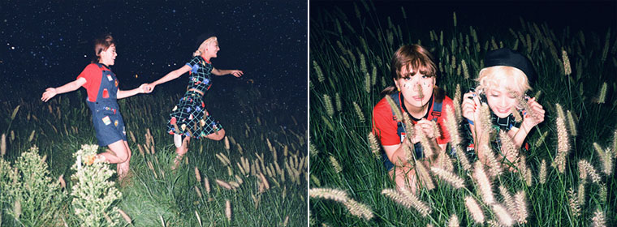

볼빨간 사춘기(안지영·우지윤)의 성공사례는 여러모로 연구대상이다. 음반기획사들이 눈독을 들이던 유망주 출신도 아니었고, 오랜 시간 언더그라운드에서 묵묵히 실력을 쌓아온 '재야의 고수'도 아니었다. 홍보력 빵빵한 대형기획사 소속도 아니고, '꽈당 동영상' 같은 계기도 없었으며, TV의 예능프로그램이 띄운 것도 아니다. 경북 영주 출신의 스물두 살 '새파란' 두 소녀는 어느 날 갑자기 튀어나와 센세이션을 일으키며 많은 이야깃거리를 만들어내고 있다. 이들의 지난했던 데뷔과정을 들여다보면 헛헛한 웃음마저 나온다. 볼빨간 사춘기가 지금에 오기까지 현 소속사 쇼파르뮤직 외에는 누구 하나 이들을 눈여겨보지 않았다. 2012년부터 3년 연속 Mnet [슈퍼스타K]에 출연했지만, 모두 예선에서 떨어졌다. 가수가 되겠다는 일념으로, 누구나 알 만한 대형기획사의 오디션에 응해보기도 했지만, 보기 좋게 퇴짜를 맞았다. 그나마 2014년 [슈퍼스타K6]에서 최종예선인 '슈퍼위크'까지 오르면서 TV에 처음 모습을 드러냈고, 이때 쇼파르뮤직 측의 눈에 들게 됐다. 이런 '보석'을 누구도 알아보지 못했다고 생각하면, 일선 음반기획사들의 '안목'에 의구심마저 들 정도다.

볼빨간 사춘기는 지금 자기만의 색깔과 감성으로 빚어낸 자작곡으로 가요계를 호령하고 있지만, 이들이 처음부터 '싱어송라이터'였던 것은 아니다. 애초 소속사는 이들의 음반을 만들기 위해 외부 프로듀서를 기용했지만, 누구도 어찌하기 힘든 이들의 독특한 음악성에 모두 두 손 들고 말았다. 야생에서 자란, 길들여지지 않는 야생마들 같은 이들에게 소속사가 꺼낸 극약처방이 "너희 노래는 너희들이 직접 만들어보라"는 것이었다. 이후 두 멤버는 마치 숙제를 하듯 1주일에 2곡씩 만들어 1년간 곡을 모았다.
볼빤간 사춘기는 곡 작업에 매달린 1년을 충실히 보냈기에 지금의 열매를 수확할 수 있었다. 볼빤간 사춘기는 매일 반복되는 하루지만, "지친 일상 속 매시간 새로운 감성들로 사람들의 일상에 생기를 불어 넣어줄 곡들"을 골라 뮤지션스 초이스에 소개한다.
| 노래 1 | |
| 노래 2 | |
| 노래 3 |